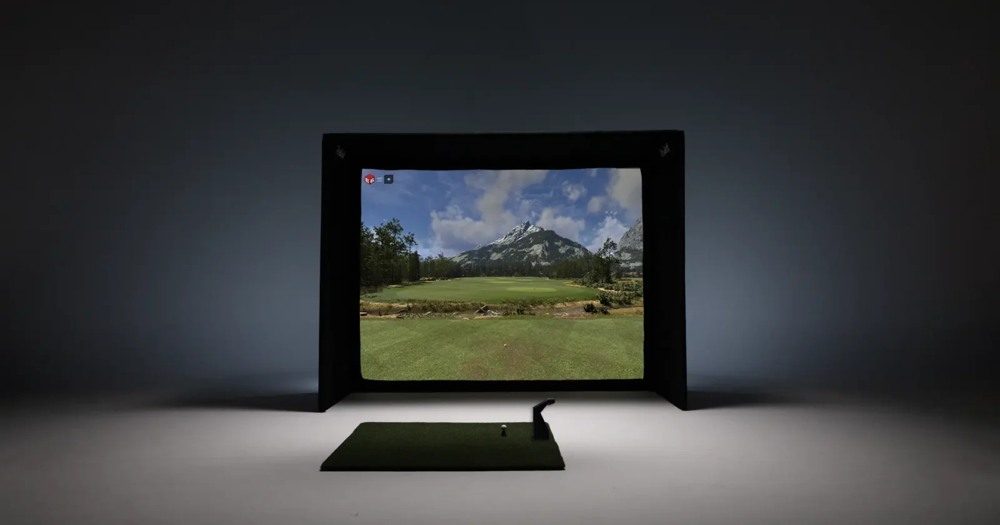

Flexible enclosure
Designed for quick assembly and durability when a permanent golf room isn’t the plan.

SIMULATORS / STARTER 10
A portable simulator setup designed to assemble, play, and pack away.
Explore packagesPERSONAL. PORTABLE. READY TO PLAY.
Starter 10 puts the simulator experience into a versatile enclosure. Convenient assembly and takedown make it suitable for a home setup or a temporary installation.
Designed for quick assembly and durability when a permanent golf room isn’t the plan.
Connect a launch monitor to bring your swing, ball flight, and shot data into the experience.
Explore TruGolf’s software for courses, practice, and friendly competition.
START WITH THE RIGHT PACKAGE
The Starter 10 enclosure paired with a portable LaunchBox launch monitor.
Explore the LaunchBox package with the additional Gimme package components.
Pair the enclosure with an overhead APOGEE launch monitor for an open hitting area.
Confirm swing clearance and installation requirements before choosing a package. Included projector, technology, and software components depend on your selected configuration.
Find Starter 10 assembly manualsYOUR NEXT ROUND STARTS HERE